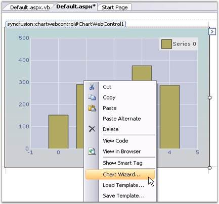

The Chart Wizard is a very convenient tool to setup the Chart during design-time.
The Wizard neatly categorizes the different portions of the Chart, and lets you customize the most common properties of these different portions easily.
Key features of the Chart wizard
1. Can create various types of chart.
2. Add series dynamically when the application is running.
3. Change the appearance of the chart with the various options that are provided to change the color palette, back color and title of the chart.
4. Customize the axes of the chart such as changing the range and labels.
5. Provides support for customization of the chart legend.
6. Customize the chart control's toolbar.
7. Lets you customize the point labels.
This section describes about the functionality of the chart wizard.

Figure 22: ChartWizard
Design Time
To display the chart wizard at design-time, follow the steps given below.
1. Add a ChartControl to the page.
2. Right-click anywhere in the chart to see a context menu.

Figure 23: Opening Chart Wizard through Context Menu
3. Select the chart wizard item from the context menu.
At Run Time
Optionally, you can also let your users to invoke this Wizard during run-time to let them customize the Chart's look and feel. To invoke the Chart wizard at runtime, use the following code.
|
[C#]
this.chartControl1.DisplayWizard(); |
|
[VB.NET]
Me.chartControl1.DisplayWizard() |
The wizard provides six different categories whose settings can be customized.
1. Chart type to let you visualize and select the type of chart to display.
2. Series to let you add custom series to the chart and also setup data binding.
3. Appearance to customize the color, font etc. of the ChartControl and ChartArea.
4. Axes to change the chart control's axes settings.
5. Legend to set the properties of the legend area.
There is a preview panel where a Chart is rendered with the latest settings. The sub topics of this section will guide you through these settings.
After making necessary changes, click the Apply to apply those settings in the chart and finally, click the Finish to close the Wizard.
 Chart Type
Chart Type